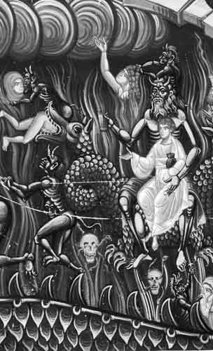

Vă propun în cele ce urmează un istoric al activităților celebrei familii, al cărui singur scop faptic și declarat a fost, este și va fi construirea unui guvern mondial unic, a unei societăți omenești planetare ghidată de doctrina „Iluminaților” formulată acum peste 200 de ani, un imperiu global pregătit pentru a fi închinat Antihristului ce va să vină.
Acțiunile rockefeller-ilor nu s-au limitat la o uriașă acumulare de capital din industria petrolieră și bănci. Nu există domeniu de activitate fundamental de natură să strice valorile reale ale umanității în care să nu fie implicați (homosexualitate, eugenie, avorturi) și nu au ratat, începînd din secolul 19, nici una din etapele edificării NOII ORDINI MONDIALE la care să nu-și aducă contribuția în mod major și uneori determinant (Liga Națiunilor, finanțarea industriei naziste, ONU, Banca Mondială, FMI, UE, Consiliul Mondial al Bisericilor). Au fondat și finanțat organisme financiare și politice interne și internaționale aflate în vârful piramidei decizionale ce sforăresc conducătorii națiunilor și sistemul economic mondial (Federal Reserve, Council on Foreign Relations, Asia Society, Bilderberg, Population Council, Comisia Trilaterală, North American Free Trade Agreement – NAFTA, Group of Thirty). Au fondat universități și au finanțat centre de învățămînt, adevarate fabrici de pregatit marionete ascultătoare fidele sistemului.
Pentru o mai bună înțelegere a activității lor păpușărești generale, să facem însă o scurtă incursiune în istoricul acestei familii:
Unii din precursorii sistemului financiar bancar modern au fost Templierii. S-a putut constata astfel că cei ce sunt la butoanele acestuia nu doar că strâng averi colosale, dar influențează masiv politicul, pot declanșa războaie, pot determina însuși cursul istoriei. Dar ei au fost doar deschizători de drum în acest domeniu și nu aveau destulă experiență acumulată, astfel încât partea văzută a ordinului a sfârșit tragic. Dar cei interesați au avut ce învăța și au dedus că nu e de ajuns influențarea puterii politice, ci trebuie ca însăși vechea putere politică să fie înlocuită cu un sistem politic marionetă. Mai mult, că trebuie distrusă și puterea bisericii. Primul care a pus în practică experiența acelor deschizători de drum în domeniul financiar bancar politic a fost Mayer Amschel Rothschild (1744–1812), fondatorul imperiului bancar al familiei Rothschild, cea mai de succes familie din istorie. Mayer Amschel Rothschild zicea: „Dați-mi controlul banilor unei națiuni și nu-mi mai pasă cine îi face legile.”
Acesta și mai apoi fiii săi au creat acest imperiu cu întindere europeană determinând explozia revoluției industriale pe continent, au influențat dezvoltarea sa economică pe direcția folosirii combustibililor fosili, inclusiv dezvoltarea transporturilor, au modernizat și stăpânit sistemul bursier, au finanțat mereu ambele tabere ale unui război, au pus la punct un sistem continental de informații rapide etc. La sfârșitul secolului 19 controlau peste jumătate din întreaga bogăție a planetei. Desigur, ei au fost vârful unui iceberg, partea văzută a unui sistem piramidal în care au fost ajutați de prieteni mai puțin văzuți. În SUA, i-au finanțat pe coloșii Rockefeller (petrol), Andrew Carnegie (oțel), Harriman (căi ferate), J. P. Morgan și pe bancherii ce au pus bazele Rezervei Federale.
Să urmărim acum un scurt istoric al evoluției prietenilor din SUA ai familiei Rothschild. După declararea independenței, timp de peste un secol, preocuparea gigantului a fost extinderea teritorială la nivel nord-american și dezvoltarea economică. Influența sa internațională în acest timp a fost minimală. Au apărut astfel câțiva giganți în petrol, oțel, cărbune, căi ferate, bănci, etc.:
John Davison Rockefeller (1839–1937) fondează în 1870, împreună cu fratele său William Rockefeller (1841–1922), mega-colosul Standard Oil, care cuprinde Standard Oil of New Jersey (SONJ) (companie redenumită Exxon, acum parte a ExxonMobil, corporație membră în Council on Foreign Relations), Standard Oil of New York (redenumită Mobil, acum parte a ExxonMobil), Standard Oil of California (redenumită Chevron, corporație membră în Council on Foreign Relations), Standard Oil of Indiana (redenumită Amoco, acum parte a BP, corporație membră în Council on Foreign Relations), Standard Oil of Ohio sau Sohio (acum, parte a BP), Anglo-American Oil Co. (acum, Esso UK), South Penn Oil Co. (devenită Pennzoil, acum parte a Shell-ului1, corporație membră în Council on Foreign Relations). Acest Rockefeller este considerat a fi fost cel mai bogat om al tuturor timpurilor. A fost de asemenea fondatorul Universității din Chicago și al Universității Rockefeller în 1901, denumită inițial Rockefeller Institute for Medical Research, care a „produs” 23 de laureați ai premiului Nobel. În 1913, a creat Rockefeller Foundation.
John Davison Rockefeller Jr. (1874–1960), fiul lui John D. Rockefeller. Membru al societăților secrete Alpha Delta Phi și Phi Beta Kappa. După terminarea studiilor, devine director la Standard Oil, iar mai apoi și la compania lui J. P. Morgan, U.S. Steel.
James Stillman (1850–1918), împreună cu W. H. Harriman, Jacob Schiff și William Rockefeller controla cele mai importante căi ferate (Texas and Pacific Railroad, Southern Pacific Railroad, International-Great Northern Railroad, Union Pacific Southern Railway, St. Louis, Brownsville and Mexico Railway, Mexican National Railroad), precum și National City Bank of New York. Fetele lui, Sarah Elizabeth Stillman și Isabel Goodrich Stillman s-au măritat cu William Goodsell Rockefeller și Percy Avery Rockefeller, fiii asociatului, prietenului și președintelui corporației Standard Oil, William Rockefeller. Unul din descendenții astfel rezultați, James Stillman Rockefeller, a fost președinte al National City Bank of New York (acum Citibank), dar a lucrat și pentru Brown Brothers Harriman. Tot el a încorporat și First National Bank.
În 1946, David Rockefeller devine singurul bancher al familiei (Chase National Bank). Pe atunci, președinte era unchiul său, Winthrop Aldrich, fiul gigantului Nelson W. Aldrich. Banca devine Chase Manhattan Bank în 1955 (acum denumită J. P. Morgan Chase). Aceasta joacă astfel rolul de „rivală” a National City Bank of New York, devenită First National City Bank (iar acum Citibank, parte a Citigroup). În fapt, National City a avut o lungă asociere cu familia Rockefeller. James Stillman Rockefeller și David au fost înscăunați la conducerea celor doi giganți în 1959, respectiv 1960. Curat „rivali”. Dar să revenim la începutul secolului și să trecem în revistă greii acelor vremuri:
Andrew Carnegie (1835–1919), magnatul corporației Carnegie Steel Company, cumpărată în 1901 de J. P. Morgan și transformată în colosul US Steel cu ramificații până în Europa centrală. După tranzacție se retrage din afaceri. Fondatorul, în 1910, al instituțiilor care îi poartă numele.
John Pierpont Morgan (1837–1913), un adevărat gigant în bănci–finanțe, industrie. După Războiul Civil, Morgan a început să investească în căile ferate și curând conducea industria transporturilor. El nu construia noi drumuri, ci le consolida pe cele cu probleme financiare, proces denumit „morganizare”. Programul său era compatibil cu cele ale marilor corporații, care doreau să înlăture competiția prin formarea trusturilor și monopolurilor.
Acesta a fost începutul marii crize corporative din New York. Capitaliști puternici, precum Philip Armour („regele” industriei alimentare pe-atunci) și Collis Huntington („regele” industriei transporturilor) s-au mutat în New York în 1890, pentru a fi aproape de marile case de investiții, precum Morgan & Co., Lehman Brothers și Kuhn & oeb. Până în 1895, New York ajunsese sediul principal al corporațiilor din SUA. Aproape jumătate din milionarii americani locuiau în metropola New York. Morgan controla cartelul Wall Street, considerat în perioada respectivă (așa cum este și astăzi) „cea mai mare putere financiară din istorie”.
La începutul anilor 1900, în culmea puterii sale, Morgan domina 100 de corporații cu active de peste 22 miliarde USD. (Iar un miliard din acea vreme echivala cu aproximativ 190 miliarde de azi. Deci vorbim de aproximativ 4 200 de miliarde…) Edificator este că, la moartea sa, averea din testament era foarte mică… Unde s-a dus restul? Unde trebuia, el fiind unul dintre principalii locotenenți ai lui Rothschild la acea vreme. Morgan a mai avut strânse relații de afaceri cu Nelson W. Aldrich și familia Warburg.
Paul Warburg (1868–1932) împreună cu frații săi Max (1867–1946) și Felix (1871–1937) au fost proprietarii firmei M. M. Warburg & CO din Germania. Max a rămas în Europa iar Paul și Felix au înființat în SUA Kuhn, Loeb & Co, împreună cu Jacob Schiff, la care se alătură și Otto Hermann Kahn (1867–1934). Paul Warburg a fost și președinte al Bank of Manhattan. De asemenea, primul director al așa-zisului Council On Foreign Relations (CFR).
Max Warburg a fost și unul dintre industriașii de la IG Farben. Mega compania germană IG Farben a avut strânse și scandaloase legături de afaceri cu Bank of Manhattan condusă de Paul Warburg. Mai mult, Max a fost acuzat că a finanțat puterea național-socialistă.
James Warburg (1896-1969) (fiul lui Paul), consultant financiar al președintelui Franklin D. Roosevelt, declara în fața Senatului SUA pe 7 februarie 1950: „Vom avea un Guvern Mondial fie că ne place, fie că nu ne place. Singura întrebare este dacă acest Guvern Mondial va fi adoptat prin cucerire sau prin accept.”
Nelson W. Aldrich (1841–1915), politician și bancher. Strânse legături de afaceri cu J. P. Morgan și Paul Warburg. Vizionarul care a născocit Federal Reserve Act. Foarte activ mason. Fiica sa, Abby Aldrich, a fost mama lui David Rockefeller.
Ținând seama de toate acestea, încă de la începutul secolului al XX-lea, jurnaliști de înaltă clasă precum Lincoln Steffens și Ida Tarbell observau pentru prima dată faptul că America nu mai era condusă de politicieni, ci de marii oameni de afaceri.
După această enormă acumulare de capital, s-a trecut la crearea unui organism care să controleze întregul sistem financiar-bancar al SUA.
Astfel, în 1907 Jacob Schiff (socrul lui Felix Morgan) declara într-un discurs la New York că, fără o bancă centrală care să aibă un control adecvat, țara va aluneca înspre cele mai severe crize din istorie. Apoi – după criza artificială din 1907, „rezolvată” de J. P. Morgan – în 1908 Congresul îl însărcinează pe Nelson W. Aldrich cu cercetarea cauzelor și cu căutarea soluțiilor pentru prevenirea crizelor… Acesta, după o vizită la greii din finanțe europeni (Rothschilds și prietenii), se întâlnește în noiembrie 1910 la Jekyll Island Club cu Paul Warburg (Kuhn, Loeb & Co.), Frank A. Vanderlip (din partea National City Bank of New York), Henry P. Davison (din partea companiilor J. P. Morgan), Charles D. Norton (din partea First National Bank of New York), Benjamin Strong (reprezentant J. P. Morgan), în cel mai mare secret posibil, și pun bazele Rezervei Federale (Federal Reserve), în conformitate cu înțelegerea prealabilă dintre Aldrich, Warburg, J. P. Morgan, Rockefeller. Secretul era necesar, deoarece opinia publică nu ar fi acceptat o „bancă națională” înființată de bănci private. Federal Reserve este recunoscută oficial abia în 1913, de către Woodrow Wilson, influențat fiind de Bernard Mannes Baruch.
Președinții SUA nu erau de capul lor nici pe atunci, având ca și azi sfătuitori și supraveghetori, cum a fost și Bernard Mannes Baruch (1870–1965). Acesta, după ce și-a părăsit afacerile, a devenit eminența cenușie sfătuitoare a președinților Woodrow Wilson și Franklin D. Roosevelt pe probleme economice (apărea în momentele importante generate de implicarea Statelor Unite în cele două războaie mondiale). În timpul primului război mondial, a fost președinte al War Industries Board, jucând un rol principal în efortul industrial de război și avantajând enorm US Steel. L-a secondat pe Woodrow Wilson la Conferința de Pace de la Versailles. (ATENȚIE! – nici nu se terminase războiul, și se făceau deja planurile Societății Națiunilor.) Membru Brain Trust, în timpul celui de al doilea război mondial a fost consultant economic al președintelui Franklin D. Roosevelt. În 1946, a fost reprezentantul SUA la United Nations Atomic Energy Commission.
Acest președinte Woodrow Wilson, chiar dacă ascultător, a spus totuși ceva remarcabil: „Unii dintre cei mai mari oameni din Statele Unite din domeniul comerțului și producției se tem de ceva. Ei știu că undeva există o putere atât de organizată, atât de subtilă, atât de atentă, atât de completă, de perseverentă încât nu au curajul să o vorbească de rău sau să o condamne decât în șoaptă.”
PĂPUȘARII au pricinuit crize și războaie și au finanțat mereu ambele tabere. Se spune ca Iluminații doreau trei războaie mondiale pentru așezarea lucrurilor pe făgașul dorit de ei. Albert Pike2 a și confirmat-o. Primul război a fost declanșat pentru destrămarea marilor imperii suspecte ca fiind neloiale noii puteri, pentru capitalizarea PĂPUȘARILOR, pentru pregătirea celui de al doilea război și pentru primul pas spre GUVERNUL MONDIAL, anume Liga Națiunilor (1919). Al doilea război a pornit în jurul chestiunii evreiești, ELITELE folosind, după terminarea lui, rasa3 precum un zid protector, un formidabil sistem datorită căruia nu poți spune ceva împotriva lor, căci se pornesc automat reacții de combatere a „anti-semitismului”. Să ne amintim aici de dr. Nahum Goldman, (1894-1982), președinte al World Zionist Organization, ce spunea așa (în 1958, la World Jewish Conference în Geneva):
„Un declin al curentului anti-semit sincer ar putea constitui un nou pericol pentru supraviețuirea evreiască. Dispariția anti-semitismului va avea efecte foarte negative asupra activității noastre.”
Apoi, al doilea război a dus la înființarea ONU (1945) și a tuturor organismelor mondiale din ce în ce mai centralizate: Banca Mondială (1945), FMI (1944), Consiliul Mondial al Bisericilor și Uniunea Europeană.
Al treilea război mondial va fi și cel mai cumplit, fiind legat de, și petrecându-se simultan cu crizele financiare, alimentare, cu marile mișcări de stradă. El va fi necesar pentru oferirea „soluției”: GUVERNUL MONDIAL al NOII ORDINI MONDIALE.
Așa au făcut și înainte de al doilea război, precum recunoștea Ben Bernanke, președintele consiliului guvernatorilor Rezervei Federale, de care s-a tot auzit în ultima vreme: „Referitor la Marea Depresie (Great Depression, din anii ‚30 ai veacului trecut), aveți dreptate, noi am făcut-o. Ne pare rău.”
Crizele duc la creșterea enormă a puterii celor care le provoacă. Astfel, în timpul Marii Depresii, John Davison Rockefeller Jr. devine cel mai mare proprietar imobiliar din New York, dezvoltând Rockefeller Center. Cu timpul, acolo s-au stabilit coloșii GE (General Electric Company)4, RCA (Radio Corporation of America), NBC (National Broadcasting Company), RKO (Radio-Keith-Orpheum Pictures), Standard Oil of New Jersey (Esso), Associated Press, Time Inc., Chase National Bank (acum, JP Morgan Chase). A finanțat masiv programe ale Ligii Națiunilor. Ecumenist îndârjit, a finanțat de asemenea enorm cultele protestante și baptiste: Interchurch World Movement, Federal Council of Churches, Union Theological Seminary, Riverside Church și World Council of Churches. A finanțat construcția așezământului Palestine Archaeological Museum și Rockefeller Museum, ce azi adăpostește și celebrele manuscrise de la Marea Moartă.
Înainte de aceasta însă, în 1928, Rockefeller pregătește dezastrul din 1929. Rockefellerii au vândut acțiunile companiei gigant Amalgamated Copper Mining Company (sau Anaconda, care controla exploatarea cuprului, zincului și aluminiului), pe care mai apoi tot ei le-au cumpărat. Fluctuația a fost uriașă, de la 40 la 128 dolari per acțiune în trei luni. A fost considerată cea mai mare fraudă din istoria bancară de până atunci și cauza declanșării MARII CRIZE.
Vorbeam la începutul articolului de necesitatea ca aceia ce domină sectorul financiar-bancar (deci toată economia) să stăpânească și politicul. Lucru care s-a și întâmplat, după cum vom vedea în continuare.
A fost înființat în 1921, primul director fiind Paul Warburg. Cei care au stăpânit consiliul încă de la început sunt Rockefellerii, prin John D. Rockefeller Jr., care l-a și finanțat enorm. Finanțările au continuat prin Rockefeller Brothers Fund. În 1949, David Rockefeller devine cel mai tânăr director al Consiliului, pe care de atunci îl stăpânește. Consiliul a inițiat și pregătit figuri importante ale politicii internaționale americane, care TOȚI sunt obligatoriu membri ai consiliului.
Consiliul publică bilunarul Foreign Affairs. Elihu Root, cel care a fost primul președinte al Council on Foreign Relations, spunea despre publicație că este un ghid pentru opinia publică. Consiliul este strâns legat de David Rockefeller Studies Program. Joseph Kraft, fost membru al CFR și al Comisiei Trilaterale, spune despre Consiliu că este Elita Puterii, condus de oameni cu interese și viziuni similare aflați în spatele „scenei” ce creează evenimente de pe poziții invulnerabile. Chester Ward – amiral și fost judecător în Marina Militară a SUA, membru în CFR timp de 15 ani – spunea: „Scopul principal al CFR este slăbirea suveranității SUA și a independenței naționale și supunerea ei unui guvern unic mondial.”
Pentru declanșarea celui de al doilea război mondial și atingerea scopului pentru care a fost pus la cale, PĂPUȘARII au finanțat în chip ticălos partidul nazist, denumit de fapt Nationalsozialistische Deutsche Arbeiterpartei, adică Partidul Național Socialist al Muncitorilor din Germania, care dorea dezvoltarea țării într-o Volksgemeinschaft (comunitate a poporului). Antisemitismul și rasismul erau îmbrățișate de germani înainte de a fi fluturate de Hitler. Acestea – alături de socialism, de dorința de a-și recâștiga demnitatea națională și de neo-păgânism – i-au condus pe naziști la putere prin susținerea maselor. În aceste condiții, începuse să se pună în discuție problema evreiască și să se caute soluții pentru ca aceștia să plece, înființându-se un stat al lor. Soluțiile propuse au fost multe, dar nu s-a făcut nimic concret. În schimb, toți evreii „importanți” – cămătari de nivel planetar, industriași, savanți – au plecat. (În legătură cu ultimii, putem face o paranteză mai mult decât interesantă. Naziștii considerau fizica atomului o știință evreiască, precum și este. Astfel, savanții evrei au plecat în SUA, au făcut bomba atomică și dezastrul ce a urmat îl știm cu toții.)
Unul dintre cei mai activi luptători împotriva Rezervei Federale a fost politicianul republican Louis Thomas McFadden (1876-1936), președinte al United States House Committee on Banking and Currency 1920-1931. Iată o mostră din discursul său anti-ELITE din perioada triumfului nazist din Germania: „După primul război mondial, Germania a căzut în mâinile bancherilor internaționali, care acum o conduc și o aprovizionează, dar o și imobilizează. I-au cumpărat industria, i-au luat resursele, îi controlează utilitățile publice. Bancherii internaționali subvenționează actualul guvern al Germaniei și de asemenea dau fiecare dolar din banii pe care Adolf Hitler i-a folosit în campania sa risipitoare. Prin intermediul Federal Reserve Board, peste 30 de miliarde dolari din banii americanilor au fost pompați spre Germania. Cu toții ați auzit de cheltuielile din Germania: locuințe moderniste, marele ei planetarium, sălile ei de gimnastică, bazinele de înot, autostrăzile ei, fabricile ei perfecte. Toate acestea au fost făcute cu banii noștri, toate acestea au fost dăruite Germaniei prin intermediul Federal Reserve Board. Federal Reserve Board a pompat atât de multe miliarde de dolari spre Germania, încât nici nu îndrăznesc să spună suma totală.”
Tot el acuza bancherii de pe Wall Street că au subvenționat revoluția bolșevică prin intermediul Federal Reserve Board și că au cauzat deliberat Marea Depresie. (A plătit însă pentru lupta sa: odată, s-a tras asupra lui, iar mai apoi a fost otrăvit.)
Să trecem în revistă câțiva dintre finanțatorii nazismului:
Henry Ford (1863–1947), fondator al Ford Motor Company și „părintele” liniei de asamblare folosită în producția de masă. Mason. (Prima conferință Bilderberg din SUA, din 1957, a fost sponsorizată de Ford Foundation. Iar familia Ford face parte din cercul prietenilor apropiați ai familiei Rockefeller.) Mega compania nazistă IG Farben a avut strânse și scandaloase legături de afaceri cu Ford Motor Company. Mai mult, Henry Ford a fost un susținător anti-semit al lui Hitler. Iar Hitler a fost, la rândul sau, profund influențat de scrierile lui Ford, care i-au servit ca sursă de inspirație pentru Mein Kampf. Mai apoi, chiar l-a decorat prin diplomații săi.
William Averell Harriman (1891–1986), politician, afacerist și diplomat. Fiul baronului din transporturi E. H. Harriman. Ministru al comerțului sub președintele Harry S. Truman și guvernator al New York-ului. Membru Skull and Bones. Trimis special al președintelui Franklin D. Roosevelt în Europa, ambasador în Uniunea Sovietică și Marea Britanie. A fost căsătorit cu fosta soție a fiului lui Winston Churchill. În 1922. întemeiază banca W. A. Harriman & Co. În 1927, i se alătură fratele său, aceasta devenind Harriman Brothers & Company, care în 1931 se unește cu Brown Bros. & Co., devenind gigantul de mare succes Brown Brothers Harriman & Co., care i-a avut ca angajați apropiați și pe George Herbert Walker și ginerele său Prescott Bush. Printre proprietățile lor, mai putem enumera Union Pacific Railroad, Merchant Shipping Corporation, Polaroid Corporation. Banca lor a fost implicată în finanțări și relații de afaceri cu companii germane, inclusiv cu unul din cei mai mari finanțiști ai nazismului, industriașul Fritz Thyssen. Acestea au continuat și după ce Hitler a declarat război Statelor Unite. Membru marcant al Consiliului pentru Relații Externe (Council Of Foreign Relations).
Prescott Sheldon Bush (1895–1972), senator al Statelor Unite, tatăl fostului președinte George H. W. Bush, bunicul lui George W. Bush. Membru al Zeta Psi și Skull and Bones. Împreună cu Brown Brothers Harriman, fondează Union Banking Corp.-New York, care a finanțat regimul nazist. În 1924, este făcut vicepreședinte al A. Harriman & Co. de către socrul său, George Herbert Walker. Șapte ani mai târziu, devine partener fondator al Brown Brothers Harriman & Co.. Legături apropiate cu Liga Americană a Controlului Nașterilor (American Birth Control League) din 1942 și mai apoi cu Planificarea Nașterilor (Planned Parenthood) în 1947.
Spațiul german a devenit de asemenea și zona de lucru a laboratoarelor experimentale a două componente indispensabile viitoarei societăți dorite de ei: 1) supravegherea, monitorizarea, îndosarierea plebei (precursoarele implanturilor cu microcipuri); și 2) eugenia.
1) Gigantul IBM (International Business Machines), cu filiale deschise și în Germania, a creat pentru naziști un sistem foarte complex, pe bază de carduri perforate, pentru a avea control asupra datelor personale. Imediat ce invadau o țară, nemții verificau sistemul de recensământ cu ajutorul cardurilor, luând astfel urma fiecărui non-arian. IBM este companie membră a Council on Foreign Relations. De fapt, a avut mereu relații strânse cu PĂPUȘARII. Fondatorul ei – Thomas J. Watson (1874–1956), mason, fost membru al Carnegie Endowment for International Peace, membru al cultului Bohemian Grove – a fost medaliat de Adolf Hitler.
2) Cea mai ticăloasă față a nazismului a fost însă eugenia, pe care nu nemții au inventat-o. Unul dintre cei mai importanți eugeniști, Charles Benedict Davenport (1866–1944), a devenit director al Cold Spring Harbor Laboratory în 1910, când a fondat și Eugenics Record Office. În 1911, acesta scrie cartea sa de referință Heredity în Relation to Eugenics. În 1904, The Cold Spring Harbor Laboratory este finanțat de Carnegie Institution of Washington, iar în 1921 este reorganizată, numindu-se Carnegie Institution Department of Genetics. Între 1910–1940 găzduiește Eugenics Record Office a lui Charles B. Davenport și a asistentului său Harry H. Laughlin. Eugenics Record Office a fost finanțată însă inițial de Mary Harriman, văduva lui E. H. Harriman, iar apoi de Carnegie Institution. Institutul este răspunzător pentru legile ce au dus la multe sterilizări forțate în SUA.
În 1911, familia Rockefeller exportă eugenia în Germania prin rulări de bani către Institutul Kaiser Wilhelm, care mai târziu va fi stâlp central al celui de-al treilea Reich. Institutul Kaiser Wilhelm (Kaiser Wilhelm Gesellschaft) a fost fondat în 1911 și i-a avut printre directori pe Walther Bothe, Peter Debye, Albert Einstein, Fritz Haber și Werner Heisenberg. Finanțări majore au venit din partea Rockefeller Foundation. Între 1937–1940 președinte a fost Carl Bosch (1874–1940), laureat în 1931 al premiului Nobel pentru chimie, care din 1935 devine președintele IG Farben.
În 1916, iubita lui H. G. Wells5, Margaret Sanger, a început promovarea eugeniei în SUA. În 1923, Sanger primește fonduri masive din partea familiei Rockefeller. Sanger a fost amică și colaboratoare a feministei anarhiste Emma Goldman (1869 – 1940)6. John Davison Rockefeller Jr. a ajutat-o și finanțat-o masiv pe Margaret Sanger cu a ei American Birth Control League, devenită mai târziu Planned Parenthood. Clarence J. Gamble, stăpânul mega companiei Procter and Gamble a fost și el foarte activ în uciderea de prunci nenăscuți. Împreună cu Margaret Sanger și Robert Latou Dickinson a reușit răspândirea avortului în întreaga SUA, după care și-a început o intensă activitate de promovare a lui la scară globală. În 1924, Hitler a scris „Mein Kampf” (sau „Lupta Mea”), în care i-a creditat pe eugeniștii americani ca fiind sursa lui de inspirație. Hitler chiar i-a scris eugenistului american și conservator Madison Grant, numind „biblie” a sa cartea acestuia „Trecerea marii rase”.
În perioada sa de glorie, Adolf Hitler declara: „Socialismul Național se va folosi de propria revoluție pentru stabilirea unei noi ordini mondiale”. Dar nu el a avut parte de Noua Ordine Mondială, nefiind decât o marionetă într-o etapă premergătoare. Bilderberg Group, Trilateral Commission, Council on Foreign Relations sunt cele ce o pregătesc acum în forma sa finală.
La sfârșitul celui de al doilea război mondial, s-a instaurat o nouă importantă etapă în edificarea GUVERNULUI MONDIAL: s-au întemeiat FMI (1944), Banca Mondială și ONU (1945), iar mai apoi altele. În 1946, Nelson Rockefeller și tatăl său John D. Rockefeller Jr. cumpără un teren de la William Zeckendorf, pe care îl donează Organizației Națiunilor Unite, unde se construiește sediul acesteia. Să urmărim și activitatea altor membri ai familiei:
John D. Rockefeller al treilea (1906–1978), membru al Council on Foreign Relations, Foreign Policy Association și Institute of Pacific Relations. Președinte al Rockefeller Brothers Fund (1940–1956) și Rockefeller Foundation. În cadrul vizitei în Japonia din 1950 pentru concluziile tratatului de pace, întreprinsă împreună cu secretarul de stat John Foster Dulles7, ia contact cu mulți lideri locali din toate domeniile importante. De asemenea, a fost foarte activ în cadrul Asia Society. În 1967, creează Asian Cultural Program pentru încurajarea schimburilor culturale dintre extremul Orient și vestici. La inițiativa sa, se creează Lincoln Center (Chamber Music Society of Lincoln Center, Film Society of Lincoln Center, Jazz at Lincoln Center, Juilliard School, Lincoln Center Theater, Metropolitan Opera, New York City Ballet, New York City Opera, New York Philharmonic, New York Public Library for the Performing Arts, School of American Ballet și Lincoln Center for the Performing Arts, Inc., căreia îi devine președinte și pe care o finanțează masiv.
În 1952, fondează Population Council, al cărui cel mai important obiectiv este planificarea familială. Cu toate că a fost controversat, avându-și rădăcinile în mișcarea „eugenică”, Population Council și-a văzut liniștit de treabă, devenind cu timpul un gigant cu ramificații în peste 60 de țări. Primul președinte al Consiliului a fost un eugenist apropiat familiei Rockefeller, Frederick Osborn, autorul „Introducerii în Eugenie” (1940), lider al American Eugenics Society și unul din fondatorii lui Pioneer Fund. Acesta scria în 1968: „Scopurile eugeniei ar trebui realizate sub alte denumiri decât «eugenia».”
Apoi, președintele Nixon a înființat Comisia pentru Creșterea Populației (Commission on Population Growth) și Viitorul American (The American Future), cunoscută ca Rockefeller Commission, cu Rockefeller președinte. Nixon a dat o mare importanță acestor comisii, creând cadrul legislativ adecvat funcționării lor și pentru punerea în practică a hotărârilor luate de acestea. Se considera de neacceptat realizarea previziunilor ca în 2013 populația SUA să ajungă la 400 de milioane (dacă se continua ritmul de atunci al creșterii demografice). Ca modalități importante avute în vedere pentru menținerea unui număr constant al populației se aflau legalizarea avortului și educația sexuală în școli.
Nelson Aldrich Rockefeller (1908–1979), a fost vice președinte al USA și guvernator al New York-ului, nume greu în Council on Foreign Relations și Trilateral Commission. Membru Casque and Gauntlet, Phi Beta Kappa și Psi Upsilon. În 1956, a creat Special Studies Project (finanțat de Rockefeller Brothers), pentru care l-a recrutat ca director pe Henry Kissinger și pe „iluminații” Edward Teller (părintele bombei cu hidrogen), John Gardner (președinte al Carnegie Corporation) și greul din presă Henry Luce. De asemenea, pe frații săi Laurance și John D. Rockefeller al treilea. Participant la întruniri ale Bilderberg Group și Bohemian Grove.
Nemilos, a înăbușit în sânge o revoltă a unor deținuți în 1971. A fost un suporter al pedepsei capitale, 14 execuții având loc pe când era guvernator. Pentru corporația de dezvoltare urbană New York a călcat în picioare drepturile de proprietate ale multor cetățeni.
Într-un articol intitulat „Chemare la construirea unei noi ordini mondiale” (New York Times, februarie 1962), a scris: „Națiunile Unite nu au fost și nu sunt capabile să aducă o nouă ordine mondială, cerută de evenimentele actuale. Este necesar ca SUA să preia conducerea tuturor popoarelor și să pună în practică conceptele și aspirațiile de suveranitate națională printr-o viziune federală.”
Actualul patriarh al familiei Rockefeller este David (1915 -) fondator al Bilderberg Group, membru al Bohemian Grove. Șef al Rockefeller Foundation și Rockefeller Center. Director al Carnegie Endowment for International Peace alături de Alger Hiss8, John Foster Dulles (Central Intelligence Agency), Dwight D. Eisenhower9 și fondatorul IBM Thomas J. Watson. În 1949, devine cel mai tânăr director al Council on Foreign Relations, pe care de atunci îl stăpânește. A inițiat Marshall Plan.
Printre apropiații lui David Rockefeller: Rothschild, generalul George C. Marshall, membrii familiei Ford, Bill Clinton10, Henry Kissinger11, Riley P. Bechtel (Bechtel Group), Gianni Agnelli (Fiat), John Loudon (Royal Dutch-Shell), C. Douglas Dillon, David Packard (Hewlett-Packard), familia Dulles, Katharine Graham (Washington Post), Brooke Astor (Waldorf-Astoria Hotels), Peter G. Peterson (președinte al Blackstone Group, fost președinte al Council on Foreign Relations), Arthur Ochs Sulzberger Jr. (președinte al New York Times).
Banca să are strânse legături cu World Bank. Trei dintre președinții acesteia, John J. McCloy, Eugene R. Black Sr. și George Woods au lucrat pentru el. James D. Wolfensohn este chiar asociat apropiat al familiei, fiind director al Rockefeller Foundation și al altor organisme Rockefeller. De asemenea, familia a găzduit pe proprietățile sale numeroase întâlniri regulate cu guvernatori de bănci naționale sau ale World Bank și FMI. Un alt apropiat al familiei, Joseph Verner Reed Jr, a fost asistentul lui Eugene R. Black Sr. (al cărui tată a fost președinte al Federal Reserve).
David Rockefeller a dezvoltat legături apropiate cu Central Intelligence Agency (CIA) încă din anii `50, prin: Allen Dulles12, directorul Richard Helms, Archibald Roosevelt Jr.13, Kermit Roosevelt Jr.14, William Bundy.
În 1965, David Rockefeller și câțiva oameni de afaceri au fondat Council of the Americas, fondată în 1965 ca organizație de afaceri pentru promovarea comerțului liber, a democrației și a pieței libere pe întreg cuprinsul continentului. Membrii săi din SUA sunt mari corporații cu interese de afaceri în America Latină, președinți, miniștri, bănci centrale, politicieni, afaceriști și finanțiști. Consiliul a fost un suporter și un instrument în conceperea acordului North American Free Trade Agreement (NAFTA) și Central American Free Trade Agreement (CAFTA), ambele promovate puternic de David Rockefeller. În 1973, a fost creată la inițiativa sa Comisia Trilaterală. Alți membri fondatori au fost Alan Greenspan15 și Paul Volcker, ambii foști capi ai Federal Reserve. De asemenea, Zbigniew Brzezinski16, care a fost și director.

În vara lui 1964, David Rockefeller are o întâlnire de două ore și jumătate cu Nikita Hrusciov. Apoi și cu succesorul său, Leonid Brejnev. În mai 1973, Chase Manhattan Bank deschide la Moscova un birou în piața Karl Marx. David Rockefeller a fost președinte al Overseas Development Council of the US-USSR Trade și al Economic Council Inc., fost fondat tot în 1973. În ianuarie 1989, o delegație a Comisiei Trilaterale – formată din ex-premierul japonez Yasuhiro Nakasone, ex-președintele francez Valéry Giscard d’Estaing17, bancherul american David Rockefeller și fostul secretar de stat al SUA, Henry Kissinger – s-a întâlnit cu Mihail Gorbaciov pentru a-l convinge că URSS trebuie să se integreze în marile instituții financiare ale lumii: GATT, FMI și Banca Mondială. Potrivit lui Bukovsky, la un moment dat Giscard d’Estaing a luat cuvântul și i-a spus lui Gorbaciov: „Domnule președinte, nu pot să vă spun exact când se va întâmpla – probabil într-un interval de 15 ani – dar Europa va fi un stat federal și trebuie să vă pregătiți pentru aceasta.” Bukovsky nu și-a putut reține uimirea față de capacitățile profetice ale lui Giscard d’Estaing: „Asta se întâmpla în ianuarie 1989, într-o vreme în care tratatul de la Maastricht din 1992 nici măcar nu fusese schițat.”
În 1992, David Rockefeller a fost desemnat să conducă Russian-American Bankers Forum, grup consultativ ce a sfătuit Rusia în privința modernizării băncilor.
Edificator pentru ce are în cap sunt înseși declarațiile sale. În august 1973, într-un articol pentru New Yorker Times, zicea: „Experimentul social din China lui Mao este unul din cele mai importante și de success din istorie.” Aceasta pentru că și China le-a servit și le servește drept laborator de studiu pentru societatea de mâine dorită de ei. La Consiliul de Afaceri al Națiunilor Unite din 14 septembrie 1994, zicea: „Dar această fereastră de ocazii în care putem construi o ordine mondială interdependentă nu va fi deschisă pentru mult timp. Deja sunt forțe puternice care lucrează și amenință să distrugă toate speranțele și eforturile noastre de a ridica o structură rezistentă de interdependență globală.” Și, zicerea lui cea mai cunoscută: „Tot ce avem nevoie este o criză majoră, și națiunile vor accepta Noua Ordine Mondială.”
Sub impulsul lui David Rockefeller, Grupul Bilderberg se întrunește pentru prima dată la „Hotel de Bilderberg”, de unde și denumirea, lângă Arnhem, între 29 și 31 mai 1954. Emblematic pentru scopul și modalitatea de lucru a celor ce se întrunesc periodic la aceste întâlniri este declarația de la 5 iunie 1991 a fondatorului David Rockefeller (din partea Council for Foreign Relations) cu privire la prestația presei față de deciziile Bilderberg: „Suntem recunoscători conducerilor publicațiilor The Washington Post, The New York Times, Time Magazine și altor mari publicații ai căror directori au participat la întâlnirile noastre și au respectat promisiunea lor de discreție pentru ultimii 40 de ani. Ar fi fost imposibil pentru noi să dezvoltăm planul nostru global dacă am fi devenit subiecți ai luminilor presei în toți acești ani, dar lumea este mult mai sofisticată și mai pregătită acum să înainteze spre o guvernare globală…”
Un alt membru al familiei este Jay Rockefeller (1937 -), senator, nepot al lui Nelson W. Aldrich. Împreună cu fiul său sunt greii trustului Asia Society, creată de tatăl său. Membru al Council on Foreign Relations, participant la Bilderberg Group, președinte al Intelligence Committee, care include: Office of the Director of National Intelligence, Central Intelligence Agency, Defense Intelligence Agency, National Security Agency, National Geospatial-Intelligence Agency, National Reconnaissance Office; componentele de informații din: Department of State, Federal Bureau of Investigation, Department of the Treasury, Department of Energy.
Mai deține următoarele funcții: vicepreședinte al comisiei senatoriale Oversight of the Terrorist Surveillance Program, președinte al comisiei senatoriale Aviation Operations, Safety, and Security, președinte al comisiei senatoriale. În 2002, face o vizită oficială în Orientul Mijlociu, unde vorbește despre invazia Irakului sub pretextul armelor de distrugere în masă. Se pronunță pentru o strânsă legătură între companiile de telecomunicații și National Security Agency (NSA) pentru monitorizarea cetățenilor. De asemenea, pentru tortura practicată de CIA. Tot el este inițiatorul documentului CYBERSECURITY, legea Internetului.
1 „Shell” înseamnă „scoică” (midie) și este un foarte răspândit simbol satanic, purtat și de papă pe roba lui. De ce scoica? Fiindcă Afrodita-Venus s-a născut dintr-o scoică, iar Venus e Luceafărul ca planetă, adică Lucifer. (n. red.)
2 Albert Pike (1809–1891), mason în gradul 33 al ritului scoțian (rit pe care l-a transformat dintr-o societate minusculă, la influența enormă pe care o știm astăzi). A fost unul din liderii de seama ai Cavalerilor Ku Klux Klan (KKK). În lucrarea sa „Dogmă și Ritual” susținea că: „Francmasoneria are două doctrine, dintre care una este ascunsă, cunoașterea sa fiind rezervată doar Maeștrilor…, iar cealaltă este publică…” Și tot el explica și motivul: „Lucifer, Zeul Luminii, luptă împotriva lui Adonai, Zeul Bibliei; da, Lucifer e Dumnezeu… Lucifer este purtătorul luminii. Nume straniu și misterios al celui ce este Spiritul întunericului! Lucifer, fiul dimineții! El este cel ce aduce lumina și în toată splendoarea sa de nerăbdat îi orbește pe cei slabi sau sufletele egoiste.” (n. aut.)
3 Evreii socotindu-se altceva decât orice alt neam. (n. red.)
4 General Electric Company, pe vremea când avea sloganul „Noi aducem lucruri bune pentru viață!”, a fost printre principalii furnizori pentru fabricarea bombelor atomice lansate asupra Japoniei. Acum – când au sloganul „Imaginația, la lucru!” - la ce să ne așteptăm? (n. aut.)
5 Scriitorul, care de fapt a fost unul dintre apostolii socialismului. (n. red.)
6 Feministele acestea au fost cele dintâi propovăduitoare ale avortului. (n. red.)
7 John Foster Dulles (1888–1959), secretar de stat sub Dwight D. Eisenhower, frate al directorului CIA Allen Welsh Dulles. În 1918, este consilier în delegația americană de la Conferința de pace de la Versailles, ajutându-l pe unchiul său, viitorul secretar de stat Robert Lansing, apoi membru al War Reparations Committee. Devine partener al firmei internaționale de avocatură Sullivan & Cromwell, care a făcut afaceri cu regimul nazist, Dulles fiind un suporter al lui Hitler. Ca secretar de stat, a contribuit considerabil la consolidarea NATO. În 1953, împreună cu fratele său, în cadrul Operation Ajax, l-a înscăunat în Iran pe nepopularul pro-occidental șah Mohammad Reza Pahlavi.
Prieten apropiat al familiei Rockefeller. (n. aut.)
8 Alger Hiss (1904–1996), membru Phi Beta Kappa, reprezentant al New Deal-alului în 1933, director OSPA, secretar executiv Dumbarton Oaks Conference, ce a finalizat planurile pentru organizarea Națiunilor Unite. În 1945, este membru al delegației americane la Yalta Conference. În același an, este secretar general al United Nations Conference on International Organization. Mai târziu, devine director plin al Office of Special Political Affairs. În 1946, devine președinte al Carnegie Endowment for International Peace, până în 1949. A fost acuzat de spionaj în favoarea sovieticilor. (n. aut.)
9 Dwight David „Ike” Eisenhower (1890–1969), mason, președinte al SUA între 1953 - 1961, comandant suprem al trupelor aliate din Europa în timpul celui de al doilea război mondial, comandant suprem NATO în 1951. Ca președinte, a făcut din dezvoltarea armelor nucleare o prioritate. Fost director la Carnegie Endowment for International Peace. Membru în Council on Foreign Relations, membru Bohemian Grove. (n. aut.)
10 Bill Clinton (William Jefferson Blythe III) (1946 -), participant la Bilderberg Group, președinte al SUA între 1993–2001, membru în Council on Foreign Relations, membru în Trilateral Commission, membru Bohemian Grove. A autorizat bombardamentele asupra Serbiei (să ne amintim că, în ziua sfântă de Paști, americanii scriau pe bombele lor: „Paște fericit!”). În colegiu, a intrat în frăția Alpha Phi Omega și mai apoi în Phi Beta Kappa. De asemenea, a devenit membru al Ordinului DeMolay și al Kappa Kappa Psi.
Citat din Bill Clinton: „Nu trebuie să fim atât de fixați în dorința noastră de a păstra drepturile americanilor.”
Și unul din Hillary Diane Rodham Clinton (1947 -): „Cred că o potențială viață începe în momentul concepției, dar din punctul meu de vedere problema nu se rezumă la viața potențială, ci afectează și celelalte vieți implicate.” (n. aut.)
11 Henry Kissinger (1923 -), participant la Bilderberg Group, secretar de stat între 1973-1977. Director la Nuclear Weapons and Foreign Policy în Council on Foreign Relations. A lucrat pentru Rockefeller Brothers Fund ca director la Special Studies Project (unde l-a racolat Nelson A. Rockefeller). Participant activ la Trilateral Commission. În 2002, George W. Bush l-a numit președinte al unui comitet de investigație al atacurilor de la 11.09. Fost președinte al International Advisory Committee of JP Morgan Chase (Banca Rockefeller). Membru Bohemian Grove
În 1974, el spunea, în spiritul eugeniei PĂPUȘĂREȘTI: „Depopularea trebuie să fie cea mai mare prioritate a politicii externe pentru lumea a treia.” A recomandat de asemenea ca hrana să fie folosită ca o armă și că instigarea războaielor e de asemenea un instrument ajutător în reducerea populației.
Iar la conferința Bilderberg Group din Evian, Franța, din 1991, zicea: „Azi, America ar fi scandalizată dacă trupele ONU ar intra în Los Angeles pentru a restabili ordinea [referindu-se la protestele din 1991]. Mâine - ea ne va mulțumi! Asta e cu atât mai evident dacă li s-ar spune că există o amenințare externă [teroristă], fie ea reală sau doar declarată, care ar amenința existența Americii. În acest fel, toate popoarele lumii ne vor ruga să îi scăpăm de această nenorocire. Toată lumea se teme de necunoscut. Când le vom pune pe tapet acest scenariu, drepturile omului vor fi cedate de bunăvoie în favoarea garantării bunăstării și a siguranței de către Guvernul Mondial.” Și, foarte important: „NAFTA [North American Free Trade Agreement] este o piatră de temelie la construirea Noii Ordini Mondiale.” (n. aut.)
12 Allen Welsh Dulles (1893–1969), director al CIA (Central Intelligence Agency; aici, au fost cooptați inclusiv naziști, cărora li s-a ascuns trecutul), ajutat fiind de Henry Kissinger, care lucrase pentru Army Intelligence; membru în Comisia Warren (care a anchetat uciderea lui Kennedy, pe care chiar ei l-au omorât). Membru în Council on Foreign Relations. În 1953, împreună cu fratele său John Foster Dulles, l-a înscăunat în Iran pe șahul Mohammad Reza Pahlavi. Tot ei au realizat dezastrul de la Golful Porcilor, când au lucrat inclusiv cu Mafia pentru a-l răsturna pe Fidel Castro. L-au exasperat pe John F. Kennedy, care la un moment dat a spus: „Spargeți CIA în mii de bucăți și aruncați-le în vânt!” În 1963, a fost asasinat, iar Dulles i-a anchetat moartea… Să ne amintim remarcabilul discurs al președintelui asasinat („The president and the press”, 1961):
„Doamnelor și domnilor, cuvântul «secret» este inadmisibil într-o societate liberă și deschisă iar noi ca popor, cât și din punct de vedere istoric, suntem împotriva societăților secrete, a jurămintelor secrete și a procedurilor secrete. Pentru că există împotriva noastră o conspirație monolitică și crudă care se bazează în principal pe modalități ascunse pentru a-și extinde sfera de influență, pe infiltrare în loc de invadare, pe subversiune în loc de alegeri, pe intimidare în loc de libera alegere. Este un sistem care a comasat vaste resurse umane și materiale pentru clădirea unei mașinării strâns unite și foarte eficiente ce unește operațiuni militare, diplomatice, de informații, economice, științifice și politice. Operațiunile sale sunt ascunse, nu publicate; greșelile sale sunt îngropate, nu puse pe prima pagină; criticii săi sunt reduși la tăcere, nu lăudați. Nici o cheltuială nu este pusă sub semnul întrebării, nici un secret nu este dezvăluit. De aceea, judecătorul atenian Solon a decretat ca fiind ilegal pentru orice cetățean să se sustragă unei controverse. Vă cer ajutorul pentru sarcina foarte grea de a informa și alerta poporul american, încrezător că împreună cu ajutorul vostru omul va fi ce a fost destinat să fie: liber și independent.” (n. aut.)
13 Archibald Bulloch Roosevelt Jr. (1918–1990), nepotul președintelui SUA Theodore Roosevelt (mason, membru Bohemian Grove). În 1947, se alătură Central Intelligence Group devenind. În 1974, devine vicepreședinte al Chase Manhattan Bank și director de relații internaționale, acompaniindu-l pe David Rockefeller în multele sale călătorii în Orientul Mijlociu. (n. aut.)
14 Kermit „Kim” Roosevelt Jr. (1916–2000), nepotul președintelui SUA Theodore Roosevelt. A contribuit decisiv la Operațiunea Ajax, care l-a debarcat pe primul ministru iranian ales democratic Mohammed Mossadegh, deoarece naționalizase companiile petroliere. Astfel, a fost înscăunat în 1953 șahul Mohammad Reza Pahlavi, prooccidental dar despotic și nepopular, creându-se în timp premisele revoluției islamice a lui Ruhollah Khomeini în 1979. (n. aut.)
15 Alan Greenspan (1926 -), fost președinte al Federal Reserve, membru în Council On Foreign Relations (CFR), unde a fost director între 1982–1988. Participant la Bilderberg Group. Membru Bohemian Grove. Președinte al Council of Economic Advisers sub președintele Gerald Ford. Director la: Aluminum Company of America (ALCOA), Automatic Data Processing Inc., Capital Cities/ABC Inc.; General Foods Inc., J. P. Morgan & Co. Inc., Morgan Guaranty Trust Company of New York, Mobil Corporation, The Pittston Company, senior advisor la Deutsche Bank.
Între 1997–1998, evreii Robert Rubin, Lawrence H. Summers și Alan Greenspan lucrează împreună cu International Monetary Fund pentru combaterea crizei financiare din Rusia… (n. aut.)
16 Zbigniew Kazimierz Brzezinski (1928 -), participant la Bilderberg Group, fost consilier la National Security, membru în Council on Foreign Relations. A „anticipat” două evenimente majore: căderea shah-ului Iranului și invadarea Afganistanului de către URSS. I-a susținut pe Khmerii Roșii și pe cel mai mare criminal pe care l-a creat STÂNGA: Pol Pot (raportat la numărul populației cambodgiene, acesta i-a depășit pe Hitler, Stalin și Mao luați la un loc). A fost consilier al lui Barack Obama pentru politica externă, alături de fiul său Mark Brzezinski.
Citat din Zbigniew Brzezinski: „Această regionalizare se desfășoară conform planului Comisiei Trilaterale, având ca scop convergența gradată a Estului și Vestului către un Guvern Unic Mondial… Suveranitatea națională nu mai este un concept viabil.” (n. aut.)
17 Valéry Giscard d’Estaing (1926 -), membru Bilderberg Group, președintele Franței între 1974–1981, mason [firește]. A colaborat strâns cu Henry Kissinger în Trilateral Commission. Este pro avort și pro contracepție. În 1982, împreună cu prietenul său Gerald Ford formează AEI World Forum, întâlniri anuale ale oamenilor de afaceri și finanțe importanți, șefi și oficialități guvernamentale, „elite” intelectuale. Sponsorizarea vine din partea American Enterprise Institute, al cărui principal consilier este Samuel P. Huntington, cel cu lucrarea „Ciocnirea civilizațiilor și refacerea ordinii mondiale.”
Proiectul constituției europene a fost elaborat de Giscard d’Estaing, ca președinte al Convenției Europene care a redactat textul tratatului constituțional. UE se transformă într-un ritm galopant într-un Big Brother de STÂNGA. La PĂPUȘARI, totul este bine planificat și se respectă întocmai schemele prestabilite. Să vedem ce se spunea în textul declarației adoptate la întâlnirea Consiliului European de la Laeken din 15 decembrie 2001, când s-a pregătit următoarea conferință interguvernamentală. Convenția s-a întrunit (cum altfel?) sub președinția lui Valery Giscard d’Estaing, care a zis:
„După căderea Zidului Berlinului, ne așteptam cu toții la o lungă perioadă de stabilitate, fără conflicte, bazată pe respectarea drepturilor omului. După doar câțiva ani, aceasta nu mai poate fi o certitudine. Ne-am trezit brusc, odată cu evenimentele din 11 Septembrie. Forțele opozante încă nu au dispărut: fanatismul religios, naționalismul, rasismul și terorismul sunt în creștere…” (n. aut.)